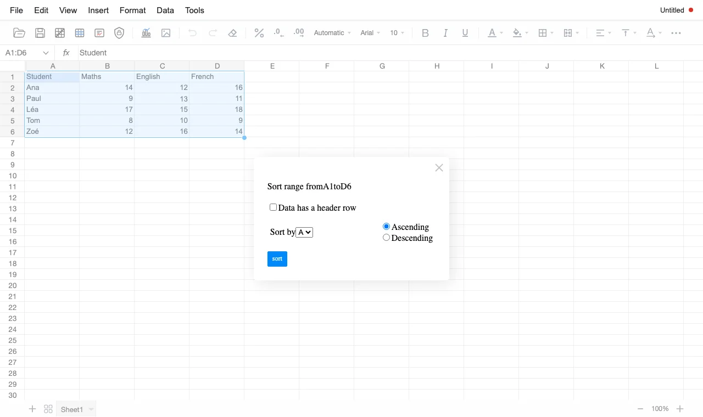
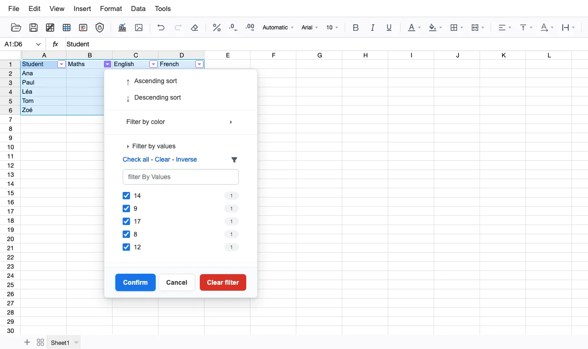
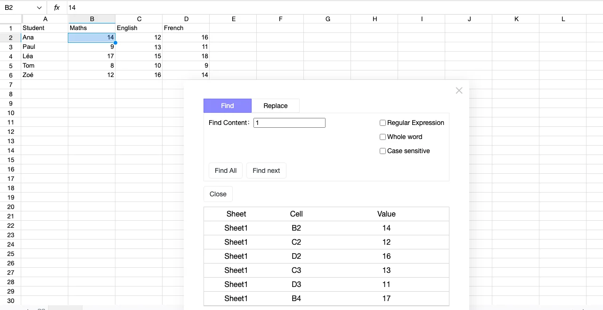

Sorting, filtering, finding
Sorting
| Command | Effect |
|---|---|
| Data › Sort and filter › Ascending, Descending | sorts the selection by its first column; also with and the right-click menu |
| right-click › Sort | chooses the sort column, the order, and whether the first row is a header |

Select the whole table, not a single column: rows must stay whole. A range that contains merged cells cannot be sorted.
Filtering
- Select the table, header included.
- Data › Sort and filter › create filter, or , or right-click › Filter.
- Click the arrow of a column.

| In the menu of a column | Effect |
|---|---|
| Ascending sort, Descending sort | sorts the rows of the table |
| Filter by color | by fill color or text color |
| Filter by values | check the values to keep; Check all, Clear, Inverse; the field looks for a value |
| Confirm | applies |
| Clear filter | removes the filter from the table |
Rows left out are hidden, not deleted. The filters of several columns add up. Data › Sort and filter › Clear filter removes the filter.
Finding, replacing
Ctrl F opens Find, Ctrl H Replace.

| Option | Effect |
|---|---|
| Regular Expression | the text searched for is a regular expression: ^A finds what starts with A |
| Whole word | the whole cell is equal to the text |
| Case sensitive | distinguishes uppercase and lowercase |
| Find All | lists the cells found; clicking a line goes there |
| Find next | goes to the next one |
| Replace, Replace All | one cell, all of them |
The search covers the displayed sheet.